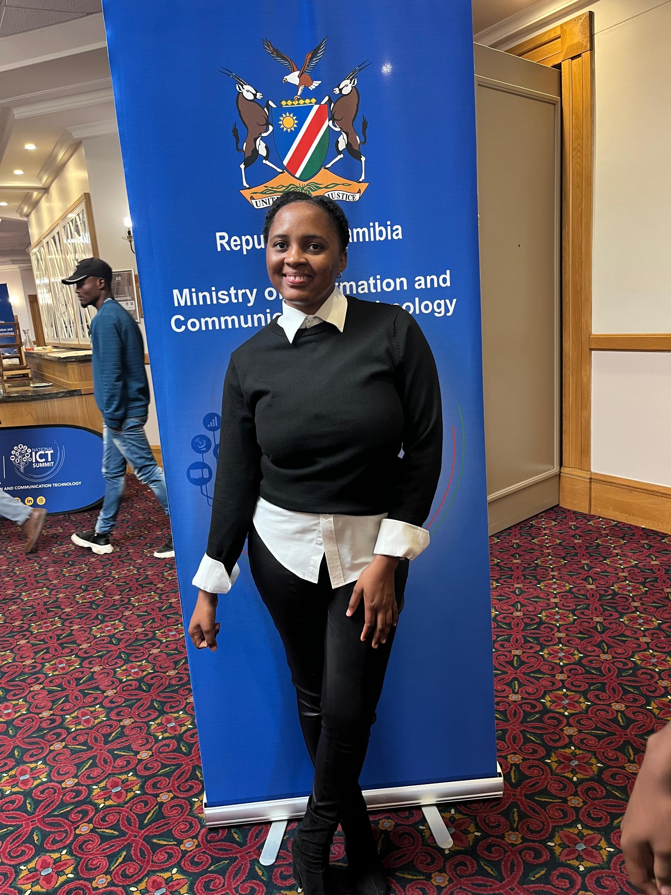

I'm Mennas Fransiska, a final year Bachelor of Informatics student at Namibia University of Science and Technology. My passion for web design led me to pursue a Full Stack Development certificate with Code Blossom, where I'm honing my skills in creating beautiful and functional web applications
Throughout my academic journey, I've discovered that web design is where my creativity and technical skills truly shine. I love the process of transforming ideas into interactive digital experiences that users can engage with. Every project is an opportunity to learn something new and push the boundaries of what's possible on the web.
I work with JavaScript, Python, HTML, and CSS, and use Visual Studio as my primary development tool. I'm constantly exploring new technologies and best practices to improve my craft and deliver exceptional results.